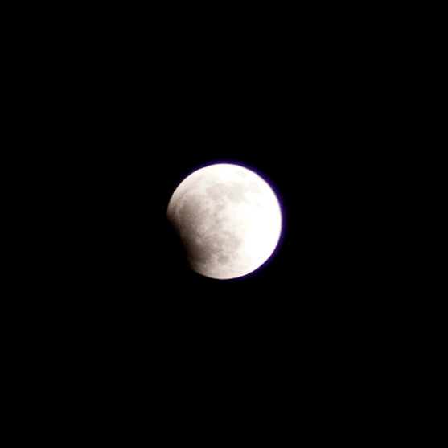
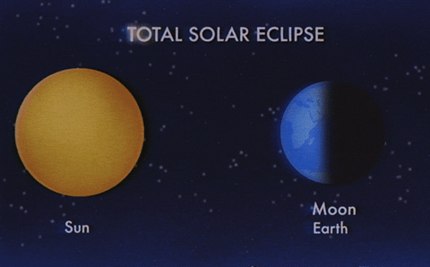

The Lunar Eclipse
A lunar eclipse occurs when the Sun, Earth, and Moon align so that the Moon passes into Earth’s shadow. In a total lunar eclipse, the entire Moon falls within the darkest part of Earth’s shadow, called the umbra. When the Moon is within the umbra, it will turn a reddish hue. Lunar eclipses are sometimes called “Blood Moons” because of this phenomenon. The more dust or clouds in Earth’s Atmosphere during the eclipse, the redder the Moon will appear.
To get the best view you'll need to be on the night side of Earth when one occurs, and you'll need a clear sky that's free of clouds. No specialist equipment is needed. Try to minimise the light in your vicinity and, ideally, watch from a spot where your line of sight won't be obstructed by tall buildings or trees.
The Solar Eclipse
A solar eclipse occurs when the Moon passes between the Sun and Earth. When the Sun, Moon and Earth line up exactly, it causes a total eclipse. This is because the diameter of the Sun is 400 times that of the Moon, but coincidentally it is also 400 times further away.
During an eclipse, the Moon temporarily covers the Sun, blocking out the daylight for a short period and casting a shadow on part of Earth. There are two parts to this shadow: the umbra, where sunlight is blocked completely and a total eclipse is experienced, and the penumbra, where only some sunlight is blocked and a partial eclipse is experienced. A total solar eclipse spells a moment of near-complete darkness, while partial eclipses are more like twilight.
There are two to five solar eclipses each year, with a total eclipse taking place every 18 months or so. Whether you can view that eclipse depends on where you are in the world.
